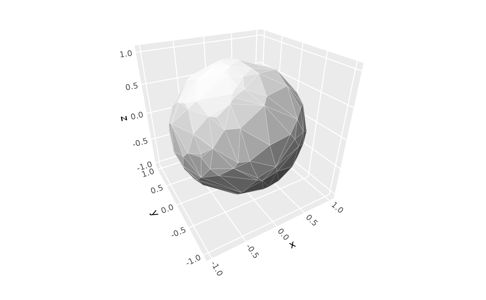
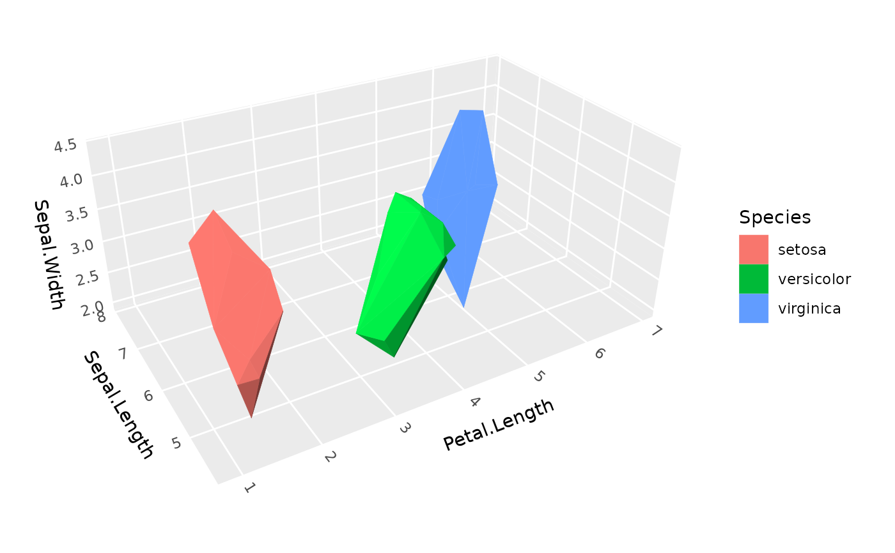

Turns 3D point clouds into surface hulls consisting of triangular polygons, using either convex hull or alpha shape algorithms.
Usage
geom_hull_3d(
mapping = NULL,
data = NULL,
stat = StatHull3D,
position = "identity",
...,
method = "convex",
radius = NULL,
light = ggcube::light(),
cull_backfaces = TRUE,
sort_method = NULL,
scale_depth = TRUE,
inherit.aes = TRUE,
show.legend = TRUE
)
stat_hull_3d(
mapping = NULL,
data = NULL,
geom = GeomPolygon3D,
position = "identity",
...,
method = "convex",
radius = NULL,
light = ggcube::light(),
cull_backfaces = TRUE,
sort_method = NULL,
scale_depth = TRUE,
inherit.aes = TRUE,
show.legend = TRUE
)Arguments
- mapping
Set of aesthetic mappings created by
aes(). The required aesthetics arex,y, andz. Additional aesthetics can use computed variables withafter_stat().- data
The data to be displayed in this layer.
- stat
The statistical transformation to use on the data. Defaults to
StatHull3D.- position
Position adjustment, defaults to "identity". To collapse the result onto one 2D surface, use
position_on_face().- ...
Other arguments passed on to the the layer function (typically GeomPolygon3D), such as aesthetics like
colour,fill,linewidth, etc.- method
Triangulation method. Either:
"convex": Convex hull triangulation (default)"alpha": Alpha shape triangulation (can capture non-convex topologies)
- radius
Square root of "alpha" parameter when alpha method is used. A face is included in the resulting alpha shape if it can be "exposed" by a sphere of this radius. If NULL (the default), a simple heuristic based on the data scale is used to calculate a radius value. Note that alpha shapes are quite sensitive to the coordinate scales of your data. See Details section.
- light
A lighting specification object created by
light(), or NULL to disable shading.- inherit.aes
If
FALSE, overrides the default aesthetics.- show.legend
Logical indicating whether this layer should be included in legends.
- geom
The geometric object used to display the data. Defaults to
GeomPolygon3D.
Grouping
Hulls respect ggplot2 grouping aesthetics. To create separate hulls for different
subsets of your data, use aes(group = category_variable) or similar grouping aesthetics.
Each group will get its own independent hull.
Alpha scale sensitivity
Alpha shape method is highly sensitive to coordinate scales. The alpha parameter
that works for data scaled 0-1 will likely fail for data scaled 0-1000.
Guidelines for choosing radius:
Start with
alpha = 1.0and adjust based on resultsFor data with mixed scales (e.g., x: 0-1, y: 0-1000), consider rescaling your data first
Larger alpha values → smoother, more connected surfaces
Smaller alpha values → more detailed surfaces, but may fragment
If you get no triangles, try increasing alpha by 10x
If surface fills unwanted holes, try decreasing alpha by 10x
Aesthetics
stat_hull_3d() requires the following aesthetics:
x: X coordinate
y: Y coordinate
z: Z coordinate
See also
coord_3d() for 3D coordinate systems, geom_polygon_3d for the
default geometry with depth sorting, light() for lighting specifications.
Examples
# Convex hull
ggplot(sphere_points, aes(x, y, z)) +
geom_hull_3d(method = "convex", fill = "gray40") +
coord_3d()

# Alpha shape (for sphere data, gives similar result to convex)
ggplot(sphere_points, aes(x, y, z)) +
geom_hull_3d(method = "alpha", radius = 2, fill = "gray40") +
coord_3d()
# Use `cull_backfaces = FALSE` to render far side of hull
ggplot(sphere_points, aes(x, y, z)) +
geom_hull_3d( # default culling for comparison
method = "convex", light = NULL,
fill = "steelblue", color = "darkred", linewidth = .5, alpha = .5) +
geom_hull_3d( # culling disabled
aes(x = x + 2.5), cull_backfaces = FALSE,
method = "convex", light = NULL,
fill = "steelblue", color = "darkred", linewidth = .5, alpha = .5) +
coord_3d(scales = "fixed")
# Use grouping to build separate hulls for data subsets
ggplot(iris, aes(Petal.Length, Sepal.Length, Sepal.Width,
color = Species, fill = Species)) +
geom_hull_3d() +
coord_3d(scales = "fixed")
